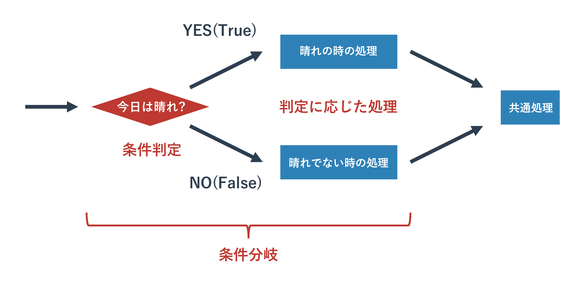

文字列型
本記事の内容
概要
テキスト処理は要するに、文字列型の処理です。 前の章で扱ったように文字列型もオブジェクトであるため、様々なメソッドが利用できます。 テキストファイルの処理では文字列型の基本知識が必要なので、 以前学んだことを少し発展させて復習します。
文字列の基本操作
文字列の定義
まず、文字列は以下のように定義するのでした。
text1 = 'hello python' text2 = '''hello world python'''
ひとつめに関しては今さらいうこともないですが、 2つめに関しては複数行でテキストをプログラム中で定義する方法でした。 記号「'」の代わりに記号「"」を使うことも可能ですが、文字列の前後で統一されている必要があります。
文字列を作る演算子
文字列の結合に関しては「+」記号でできますが、 数字などを結合するときは「文字列に変換」してから結合するのでした。 ほかの型から文字列型への変換にはstr関数を使います。
print('hello ' + 'world') # hello world print('hello ' + str(5)) # hello 5
文字列長は以下のように len() 関数を使うことで取得できます。
length = len('hello world') print(length) # 11
in 演算子
検索には「存在の確認」と「位置の確認」の2つの使い方があり、それぞれ次のようになります。
text = 'hello world python' print('wor' in text) # True print('w0r' in text) # False
inについてはlistでの使い方と同じで、「A in B」の場合は「AがBに含まれていれば Trueを返す」という動きをします。 ’hello world python’ というテキストに ‘wor’ は含まれているので True となっています。
文字列の部分取得
文字列中の「文字」の取得は以下のように [X] で位置を指定して行います。
text = 'hello world python' print(text[4]) # o print(text[-4]) # t print(text[100]) # Traceback (most recent call last): # ... # IndexError: string index out of range
この位置の指定はリストの要素の数え方と同じで0から始まります。 先頭から0、1、2……と数えていくと4はoに対応しています。 面白いのがこの値をマイナスにできるところです。 このように指定すると後ろ側から取得してきます。 この際、0からではなく-1、-2、-3……とカウントすることに注意してください。 文字列の範囲を超えてアクセスしようとするとエラーになります。
文字列から「文字列」を取得するには、以下のように行います。
text = 'hello world python' print(text[6:11]) # world print(text[-12:-7]) # world
これは「スライシング」と呼ばれるテクニックで、 [X:Y]とあるとXからYまで取得という意味になります。 [X:Y] と指定する際はX < Yとなるようにしてください。 先ほどと同じように、範囲指定にもマイナス値を利用できます。
前と後ろを指定するのではなく、Xより前、Xより後という指定の仕方も可能です。
print(text[6:]) # world python print(text[:11]) # hello world print(text[:]) # hello world python
見ていただくとわかるように [X:Y] の片方を省略しています。 そうすると先頭から、もしくは末尾までという意味になります。 あまり使いどころはありませんが、両方とも省略すると、文字列のすべてが取得されます。 このスライシングはリストから複数の要素を取り出す際にも使えます。
文字列型のメソッド
文字列のデータは決して変わらない
先にお伝えしたように文字列型もオブジェクトであるためメソッドが利用できます。 ただ、文字列型に対してメソッドを呼び出した場合は 「呼び出し元の文字列オブジェクトは変更されない」という規則があります。 例えば次にお話する文字列の置き換えも、置き換えメソッドを呼び出した文字列は変更されず、 メソッドの返り値として変更された文字列オブジェクトがかえってくるという動きをします。 これは全ての文字列型のメソッドに共通した特徴なので必ず覚えておいて下さい。
文字列の部分置き換えと削除 : replace メソッド
文字列型のメソッドを使ってテキストの置き換え処理をしてみます。 テキストエディタなどである特定のキーワードを別のキーワードに置き換えることがあるかと思いますが、それと同じ要領です。 サンプルコードを以下に記載します。
text = 'hello world python' text1 = text.replace('o', '0') print(text) # hello world python print(text1) # hell0 w0rld pyth0n print(text.replace('world', 'WORLD')) # hello WORLD python
文字列.replace(置き換える文字列, 置き換えられる文字列)とすると、変換された文字列が返されます。 例にもあるように、元の文字列自体は変化していません。 1文字だけを変更することもできますし、文字列を変更することもできます。 不要かもしれませんが、上記のコードのオブジェクトとメソッドの関係を図に示します。

‘hello world python’ という文字列型のオブジェクトを変数 text に格納し、 そのオブジェクトに対してメソッド replace を呼び出しています。 そのメソッドは変換した文字列を返り値として返しますが、 元のデータ(オブジェクトが持つ’hello world python’ というテキストデータ自体)は変更を加えません。
文字列中の特定の文字列を消したい場合は、replaceメソッドの置き換え対象の文字列を空文字(
''
)にします。
そうすることで、置き換え対象の文字列が空文字になるため、実質的に削除されます。
text = 'hello world python' text1 = text.replace('o', '') print(text1) # hell wrld pythn
文字列の検索 : startswith, endswith, find
文字列の検索もそれほど難しくはありません。
find メソッドについては最も左側にあるマッチした位置を返します。 そのため、'o'は何個もありますが、一番左の位置となっています。 マッチしない場合は-1が返ってきます。
print(text.find('wor')) # 6 print(text.find('w0r')) # -1 print(text.find('o')) # 4
find メソッドに似たメソッドで startswith と endswith があります。 名前から分かるかもしれませんが、前者は「この文字列から始まっていればTrue」、 後者は「この文字列で終わっていればTrue」という動きをします。
text = 'hello world python' print(text.startswith('hell')) # True print(text.startswith('hell0')) # False print(text.endswith('hon')) # True print(text.endswith('h0n')) # False
それほど使う場面は多くないのですが、 find メソッドのオプションである第二引数を指定することで前側を指定した数だけ飛ばして途中から検索することもできます。 右側から探索をする rfind というメソッドも利用できます。
text = 'hello world python' print(text.find('o', 10)) # 16 print(text.rfind('o')) # 16
文字列の前後の削除 : strip, rstrip, lstrip
次に文字列の前後からの特定の文字の削除メソッド stripです。 よく利用するのは、前後の空白や改行コード、タブなどを取り除く場合などでしょう。
text = ' hello world \n' print(text.strip()) # 'hello world' print(text.strip(' hell')) # 'o world \n'
strip関数に引数を指定しないと文字列の前後の空白文字(空白とタブ、改行)が取り除かれます。 引数に文字列を指定すると、その文字列が取り除かれます。 この strip() 関数はファイル読み込み処理とともに「改行コードを取り除く」ことによく使われることがありますので、 覚えておいて頂いたほうがいいかもしれません。 左側の文字だけを取り除く場合は lstrip、右側だけの場合は rstrip メソッドを使います。
text = ' hello world \n' print(text.strip()) # 'hello world' print(text.lstrip()) # 'hello world \n' print(text.rstrip()) # ' hello world'
また、文字列を split メソッドで特定の区切り文字で分割して文字列のリストにすることもできます。 改行コードで分割する場合は split(‘\n’) とすることもできますし、 splitlines() という専用のメソッドもあります。
text = '1, taro, 35, male' print(text.split(',')) # ['1', ' taro', ' 35', ' male'] text = 'hello\nworld\npython' print(text.splitlines()) # ['hello', 'world', 'python'] print(text.split('\n')) # ['hello', 'world', 'python']
上記サンプルにあるようなコンマ「,」記号での文字列の分割は CSV(Excel出力)やログの解析あたりでよく使うテクニックです。 たとえば以下ではトリプルくおテーションで作ったCSV形式のテキストを、 まず改行コードで分割して1行ずつににして、各行においてコンマでテキストを区切っています。
text = '''1, taro, 35, male 2, jiro, 29, male 3, hanako, 23, female''' for line in text.split('\n'): elems = line.split(',') print(elems[1].strip() + ':' + elems[2].strip()) # taro:35 # jiro:29 # hanako:23
この例のように CSV の要素に空白が含まれているのであれば、 先ほどの strip 関数と組み合わせて前後の空白を取り除いて整形してあげてもいいかもしれません。
文字列のエスケープ
最後に文字列で使われる特殊記号についてお話します。 特殊記号はプログラム中で意味を持ってしまう特別な記号のことです。 たとえば「'」という記号は文字列を作成する際に利用する特別な記号です。 そのほかにはビープ音なども記号に分類されます。 これらは文法的な理由やそもそもそれを表現する記号がキーボードのキーにないことから、 「これは XX ですよ」という特別なルールにもとづいて文字列に表記します。 そのルールに利用されるのがエスケープ記号と呼ばれるもので半角のバックスラッシュ「\」(英語キーボード)か、 半角の円記号「¥」(日本語キーボード)を利用します。 このエスケープ記号の後に特別な文字を続けることで、それが特別な意味を持つのです。
たとえば「'」とビープ音は以下のように記載できます。
print('escape sample1 \'.') print('escape sample2 \a.')
ほかには改行とエスケープ記号自身あたりをよく使います。
print('escape sample1 \n.') print('escape sample1 \\.')
エスケープ記号一覧は調べてもらえればすぐに出てきますので、興味がある人は検索してみてください。